Pranzo di lavoro
Veloce quando hai poco tempo, curato quando devi fare bella figura. Dal lunedì al venerdì.
Sito dimostrativo
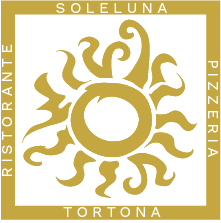
Soleluna PrenotaRistorante · Pizzeria · Tortona
Cucina del territorio, forno a legna e un impasto che lievita 48 ore. In Viale De Gasperi, a Tortona.
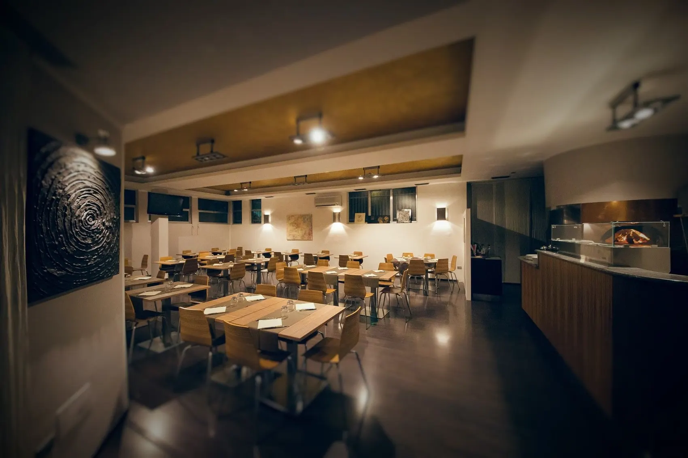
La pizzeria
L’impasto riposa due giorni prima di essere steso, poi passa dal forno a legna: così la pizza arriva al tavolo leggera e fragrante.
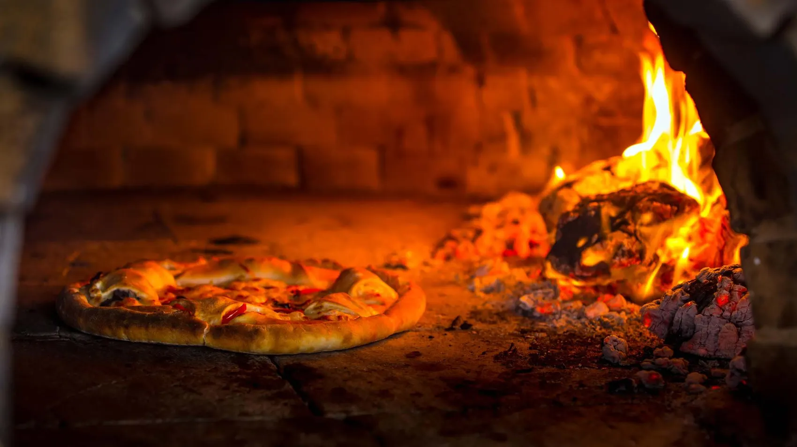
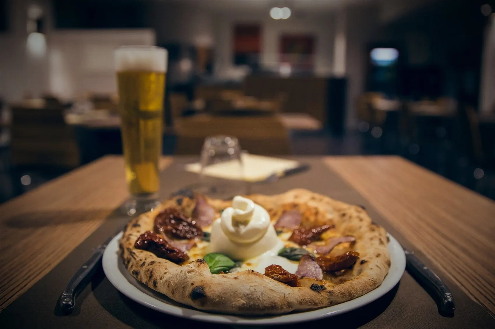
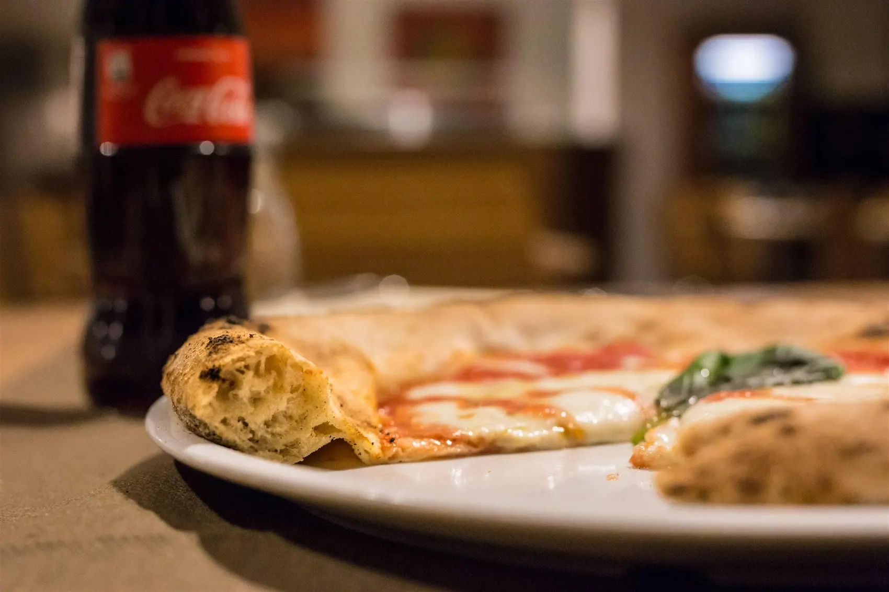
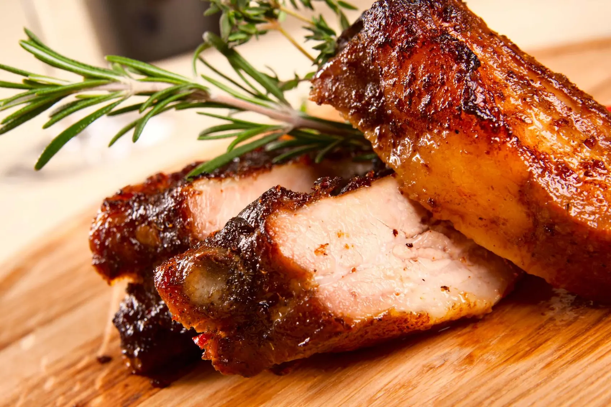
La cucina
Scegliamo solo prodotti del territorio. Pane, pasta e dolci li prepariamo noi, ogni giorno.
Alcuni piatti dalla carta: le proposte cambiano con la stagione. Per il menu di oggi e per allergie o intolleranze chiamaci.
Le sale
Due sale interne per ospitare fino a 100 persone, un’area riservata sul soppalco e, d’estate, il dehors.
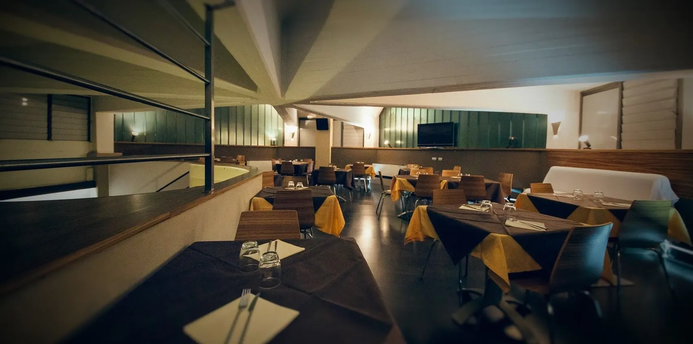
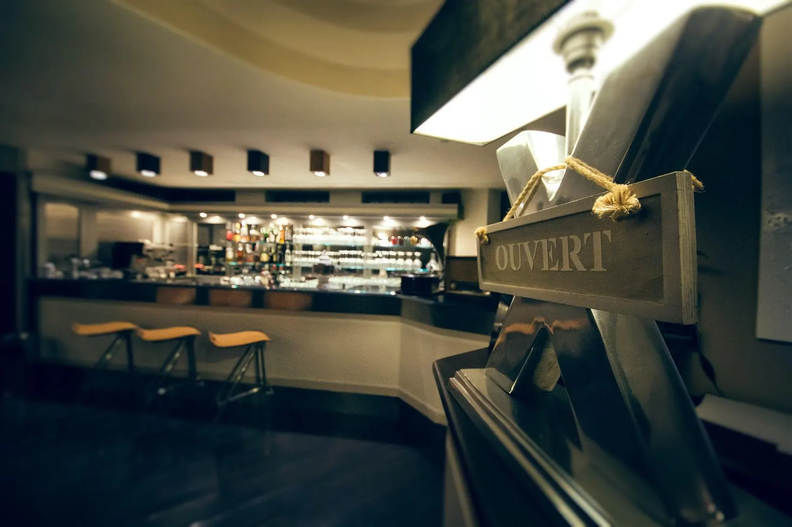
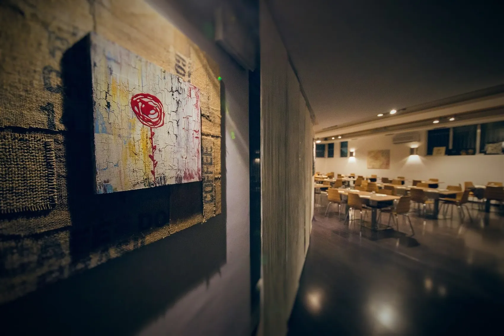
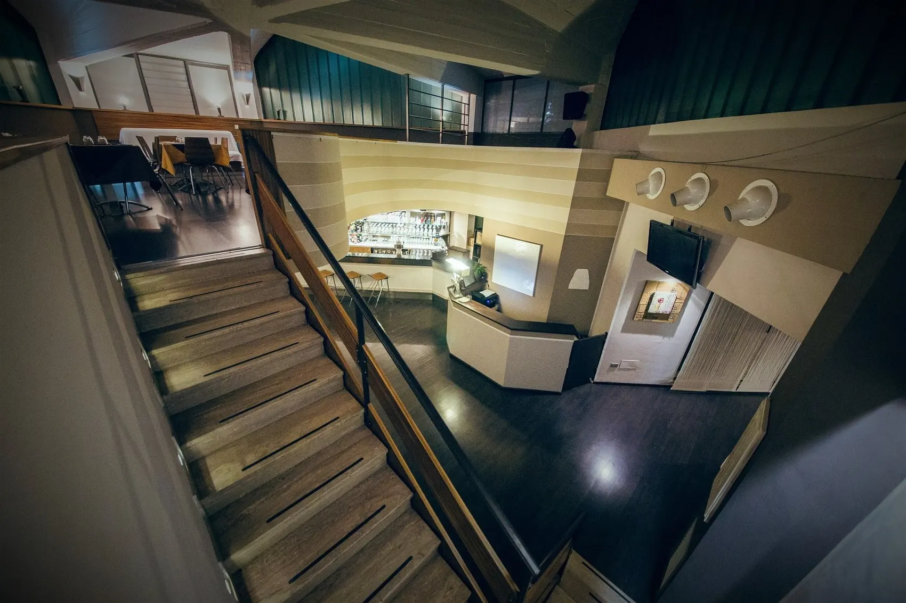
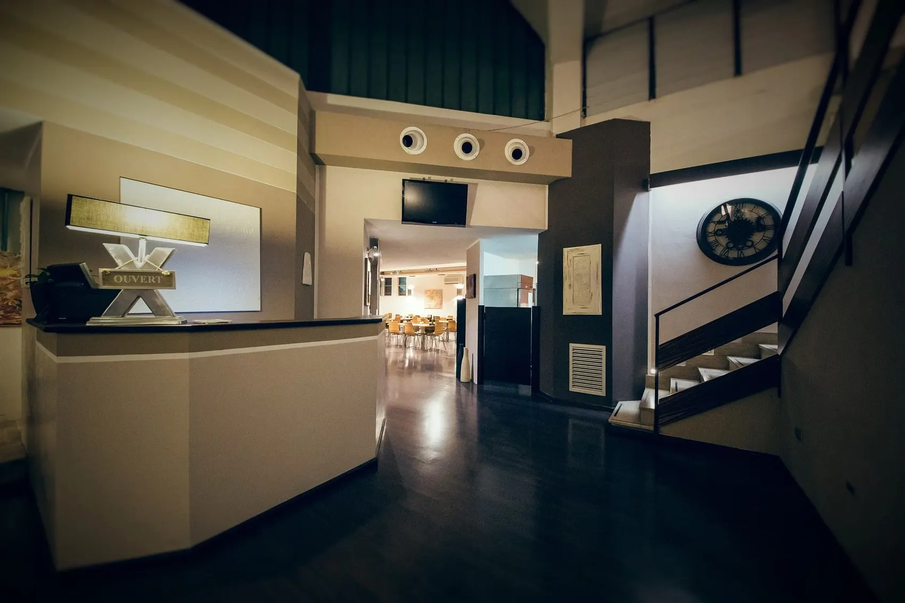
Per ogni occasione
Veloce quando hai poco tempo, curato quando devi fare bella figura. Dal lunedì al venerdì.
Ti aiutiamo a organizzare eventi personali o aziendali: un’area riservata sul soppalco, oppure il locale intero.
Se cerchi la giusta atmosfera per una cena romantica, Soleluna è la scelta giusta.
Prenota
Viale De Gasperi, 24, 15057 Tortona (AL)
info@solelunatortona.it
| Lunedì | 11:45–14:00 · 18:45–23:00 |
|---|---|
| Martedì | 11:45–14:00 |
| Mercoledì | 11:45–14:00 · 18:45–23:00 |
| Giovedì | 11:45–14:00 · 18:45–23:00 |
| Venerdì | 11:45–14:00 · 18:45–23:00 |
| Sabato | 18:45–23:00 |
| Domenica | 18:45–23:00 |
Sabato e domenica a pranzo apriamo su prenotazione.